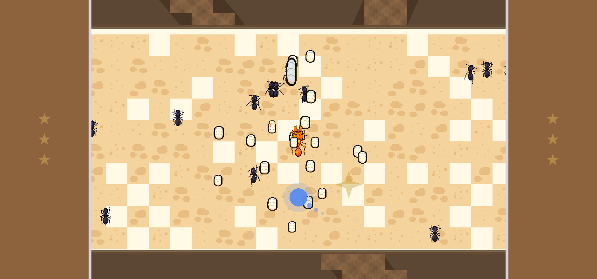
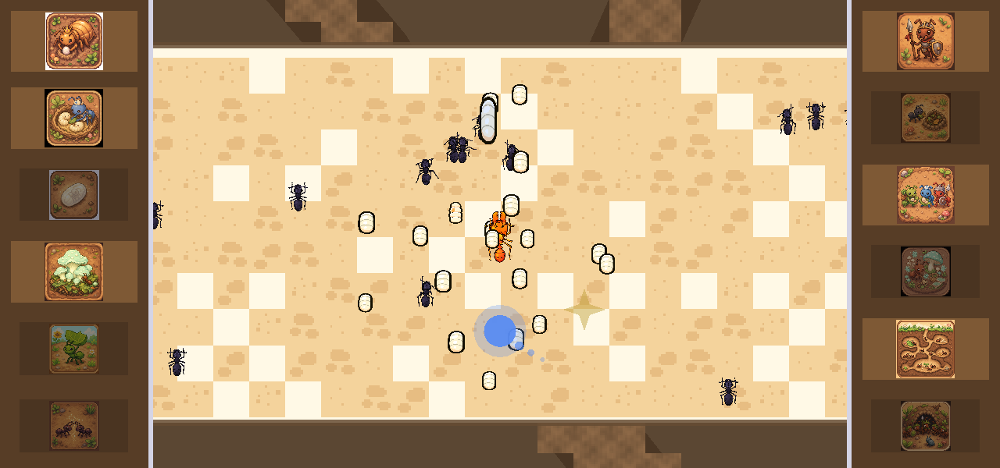
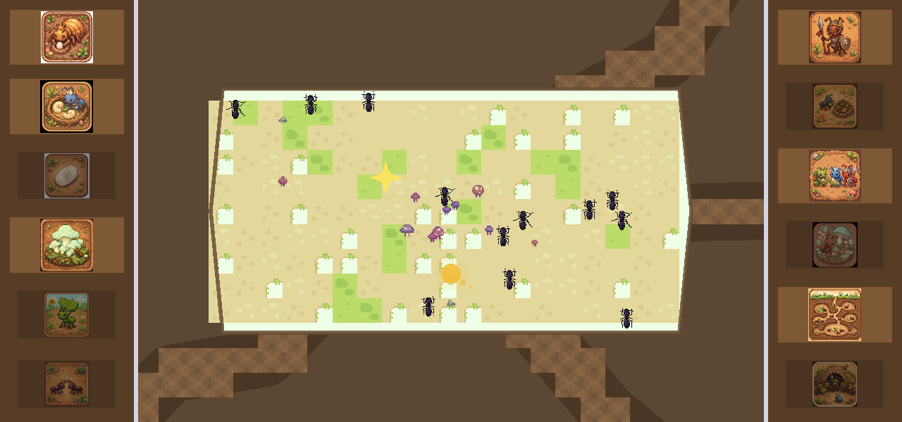
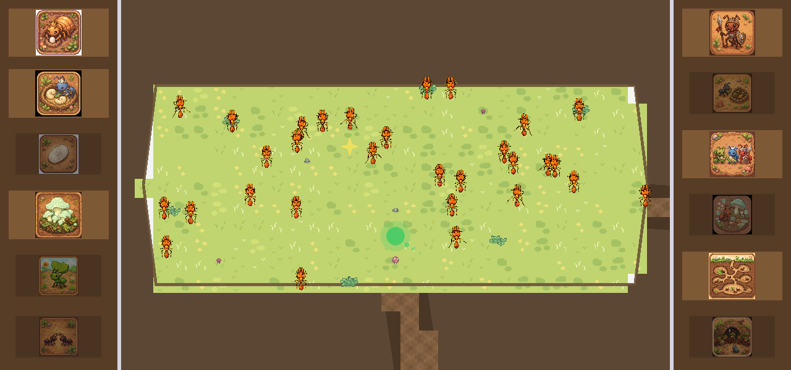
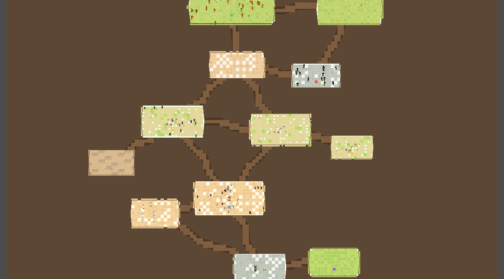

Queen
Sample knowledge star — queen and egg-laying in the nest chamber.
Game 1 · Star Learner
A calm, exploratory leaf-cutter ant colony simulator. You guide one worker through a living nest, join glowing pheromone jobs, and stop beside golden knowledge stars for short real-ant documentaries. Exploration is the loop; learning is the reward.
Ant Explorer is a living leaf-cutter colony on a phone-sized landscape stage. Tap the ground and your worker walks there, routing room → tunnel → room along the nest graph. Tap a glowing pheromone trail to take on that job — forage, garden, nurse, defend, and more — alongside the NPC ants. The colony is a simplified homeostasis sim: chambers, castes, brood, and a fungal garden economy that keeps the nest busy without needing a manual.
Twelve golden knowledge stars hide around the nest. Walk up to one and a short documentary clip plays; that star then lights up on the side shelves. Shelves start tucked under soil, reveal on a side-touch or during the intro narration, and show dim locked tiles versus full-colour collected ones. Every prompt is spoken — no reading required — with large, thumb-first targets for one-finger landscape play.
Built in Godot 4.3 (Mobile renderer), offline-first: narration and documentary clips ship on the device with the game. On a Star Learner unit it is the ants tile in the curated kiosk catalog — no store, no browser, just the nest.





Three in-game knowledge-star clips from the twelve-star shelf — the same offline documentaries a child finds by exploring the nest.
Sample knowledge star — queen and egg-laying in the nest chamber.
Sample knowledge star — fungal garden cultivation.
Sample knowledge star — leaf cutting and foraging on the surface.